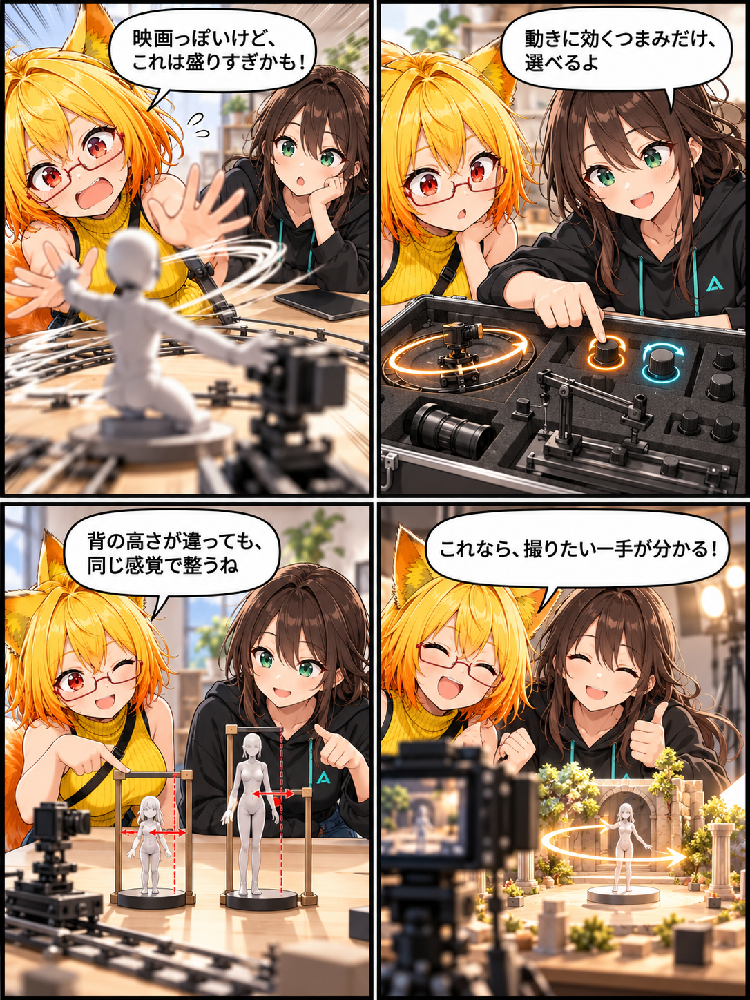

映画っぽさを、ちゃんと選べるように
Desktop向けカメラモーション編集の仕上げとして、プリセットの見本をより映像らしくし、選んだ動きに意味のある調整だけを見せるように整えました。
main です。集計終了時点のHEADは 0a78dfea89208ef83c4a960b942d776bef7e4577、期間内コミットは2件でした。未コミット差分は期間内に実装された事実を確定できないため、実績には含めていません。
見本が「何を動かすか」を伝える
18種類のカメラモーションには、人物撮影・基本・演出それぞれの意図があります。今回、カードの模式プレビューを、奥行きの分かる固定シーン、被写体、カメラの動きで描き直しました。パンやチルトは位置を保った視線の動き、ドリーやトラックは位置の移動、ズームは画角の変化として見分けられます。
人物撮影用の一部プリセットには、最初の調整値も用意しました。フェイス・プッシュイン、ファッション・オービット、クレーン・リビールなどの性格を、選んだ直後から確認しやすくするためです。
効かないつまみを置かない
すべてのモーションに同じ調整項目を並べるのではなく、実際にそのプリセットで使われる項目だけを出すようにしました。追従・ハンドヘルド・ウィップパンには効かないイージングを出さず、パン／チルト／ロールのような回転中心の動きでは、状況に応じて注視対象やアバター相対の項目を隠します。
画面内の左右・上下のフレーミング調整は、固定のメートル値ではなく、選択中アバターの見えている高さを基準にします。アバターの大きさが違っても、構図を少しずらす感覚を保てるようにしました。
今回の範囲
対象はDesktop向けのカメラモーション編集です。動きの評価、表示項目、プリセットごとの推奨値、カード用の映像的な模式プレビューを整えました。
4コマの話
同じ「映画っぽい」でも、どの動きが何に効くか分からないと選びにくいものです。今回は、派手に盛り上がった試写を二人で見てから、必要なつまみだけを残して一番気持ちよい一手へ戻る、小さな反転の話にしました。
まとめ
カメラモーションを、名前と抽象的な線だけで選ばず、奥行きのある見本と目的に合う調整から選べるように整えました。撮りたい一枚に必要な動きを、迷わず試せるための仕上げです。